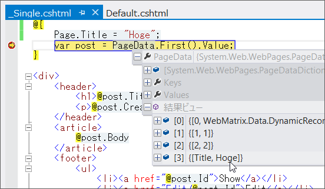

WebMatrix 2 / Razor：switch と RenderPage()
執筆日時：

たとえば、
- ~/Posts/ …… ページリストの表示
- ~/Posts/:id …… 個別ページの表示
というのをやってみたいとき。
- ~/Posts/Default.cshtml
を作成して、
- UrlData.Count() == 0 ……ページリストの表示
- UrlData.Count() == 1 ……個別ページの表示
という処理を書けばいいよね（WebMatrix のルーティング - だるろぐ）。
こういう処理は if で分岐してもいいのだけど、将来的に UrlData.Count() >= 2 の処理を書くことも考えて switch にするのが個人的には好み。いかにも「処理を切り替えています！」みたいな感じで。
でも、そういえば Razor で switch って書いたことないな。どうやって書くんだろう。
@{
var db = Database.Open("db");
var query = "SELECT * FROM Post ORDER BY CreatedAt DESC";
var posts = db.Query(query);
}
@switch (UrlData.Count)
{
case 0:
foreach (var post in posts)
{
@RenderPage("_Single.cshtml", post)
}
break;
default:
@RenderPage("_Single.cshtml", posts.First())
break;
}
……と思ったけど普通に書いて動いた。

リストの時は _Single.cshtml のレンダリングを foreach で回して、個別ページの時は一度だけ出力する。_Single.cshtml は何度も使う単一 Post の表示を切り出したもので、部分ビューと呼んだりもするのだけど、内容はこんな適当な感じ。
@{
var post = PageData.First().Value;
}
<div>
<header>
<h1>@post.Title</h1>
<p>@post.CreatedAt</p>
</header>
<article>
@post.Body
</article>
<footer>
<ul>
<li><a href="@post.Id">Show</a></li>
<li><a href="Edit/@post.Id">Edit</a></li>
<li><a href="Delete/@post.Id">Delete</a></li>
</ul>
</footer>
</div>
RenderPage() を使ったデータの受け渡しがいまいちよくわからなかったのだけど、PostData を介しているみたいで、PageData.First() と書いたらなんとなく動いた。
とはいえ、PageData / Page はいろんなところで便利に使っちゃったりする。上書きなどの汚染がちょっと怖いかもしれない。念のため Visual Studio でなかをのぞいてみた。

RenderPage(…, post, 1, 2) と渡してみたのだけど、params の key は順に 0、1、2 とふられるみたい。なので、Page.Title = "hoge"; といった感じで使う分には問題がなさそう。PageData[0] で post がとれるはず。まぁ、わざわざ上書きしたらこの限りではないと思うけれど。
注意
@switch (UrlData.Count) { case 0: foreach (var post in posts) { RenderPage("_Single.cshtml", post); } break; default: RenderPage("_Single.cshtml", posts.First()); break; }
一応これでもコンパイルは通るのだけど、RenderPage() は動かない。@RenderPage() って書かなきゃいけないんだね*1。ここら辺はまだわかるようでよくわかっていないところ。
*1:文末の ; は不要になる